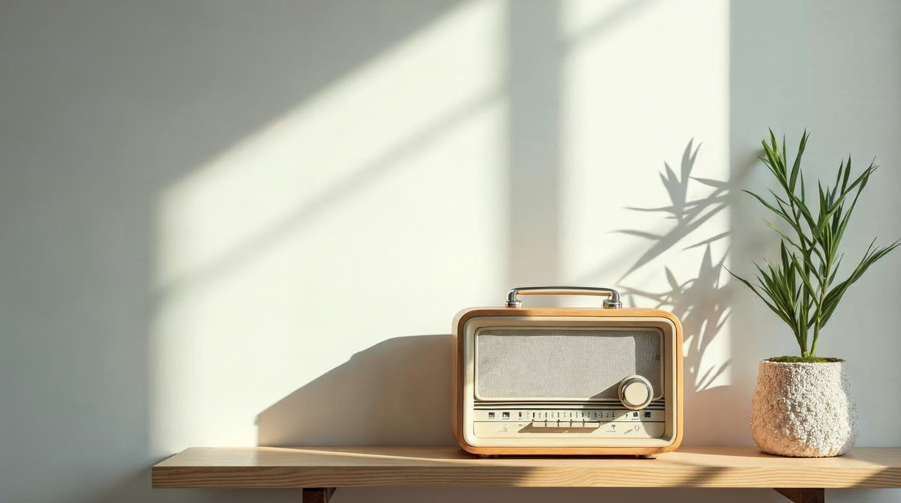

이종호 한의사 감수좋은꿈참사랑한의원 대표원장 (한의사 면허번호 19769)발행 2026-11-26 · 수정 2026-11-26
이 글의 차례
텔레비전 소리가 자꾸 커집니다. 거실에 들어서면 귀가 따가울 정도인데, 아버지는 "요즘 배우들이 말을 웅얼거려서 그래" 하십니다. 전화 통화를 하면 같은 말을 두세 번씩 되물으시고, 식당처럼 시끄러운 곳에서는 대화에 잘 끼지 않으십니다. 가족 모임에서 혼자 조용히 웃고만 계신 모습이 마음에 걸립니다.
노인성 난청은 이렇게 서서히, 본인보다 가족이 먼저 알아채는 경우가 많습니다. 어르신 본인은 "나는 잘 들리는데 사람들이 작게 말한다"고 느끼시기 쉽습니다. 소리가 아예 안 들리는 것이 아니라 말소리의 일부가 흐릿하게 들리기 때문입니다.
진료실에서 이명이나 어지럼, 잠 이야기를 하시다가 "그런데 요즘 귀도 좀 어두워졌어요" 하고 덧붙이시는 분이 많습니다. 저는 그 말씀을 그냥 넘기지 않고 청력 검사를 받아 보셨는지 꼭 여쭙습니다. 귀가 어두워지는 것은 소리만의 문제가 아니라 대화와 관계, 마음과 기억에까지 이어지기 때문입니다.
이 글에서는 노인성 난청이 왜 생기는지, 어떤 신호로 알아챌 수 있는지, 왜 검사와 보청기를 미루지 않는 것이 좋은지, 그리고 한의원에서 함께 살필 수 있는 부분은 무엇인지를 차례로 정리했습니다.
노인성 난청은 어떤 모습으로 오나요?
노인성 난청은 대개 양쪽 귀에 비슷하게, 몇 년에 걸쳐 서서히 옵니다. 높은 소리부터 먼저 잘 안 들리게 되는 것이 특징입니다. 그래서 낮고 굵은 목소리보다 아이들이나 여성의 높은 목소리를 알아듣기 어려워집니다.
말소리 가운데 '스', '츠', '프'처럼 높은 소리가 흐릿해지면서, 소리는 들리는데 무슨 말인지 정확히 알아듣기 어려운 상태가 됩니다. '사과'와 '사고', '일곱'과 '여덟'을 헷갈리는 식입니다. 조용한 방에서 일대일로는 괜찮다가, 여러 사람이 함께 말하거나 주변이 시끄러우면 대화를 따라가기 힘들어집니다.
가족이 먼저 알아채는 신호로는 텔레비전 소리가 커지는 것, 되묻는 일이 늘어나는 것, 엉뚱한 대답을 하시는 것, 초인종이나 전화벨을 못 들으시는 것이 있습니다. 대화가 피곤해 모임을 피하고 말수가 줄어드시는 모습도 흔합니다.
왜 나이가 들면 귀가 어두워질까요
귀 안쪽 깊은 곳에는 달팽이처럼 생긴 기관이 있고, 그 안에 소리를 전기 신호로 바꾸는 작은 털세포들이 줄지어 있습니다. 나이가 들면 이 털세포가 조금씩 지치고 줄어듭니다. 높은 소리를 맡는 털세포가 입구 쪽에 있어 가장 먼저 영향을 받기 때문에 높은 소리부터 흐려집니다.
오랜 세월 들어 온 소음도 쌓입니다. 공장이나 공사 현장처럼 시끄러운 곳에서 오래 일하셨거나, 큰 소리에 자주 노출되셨다면 난청이 더 일찍, 더 크게 올 수 있습니다. 한번 상한 털세포는 다시 자라지 않아서, 남아 있는 청력을 아끼는 것이 중요합니다.
몸 전체의 혈관 건강도 귀와 이어져 있습니다. 귀 안쪽은 아주 가는 혈관으로 영양을 받기 때문에 고혈압, 당뇨, 흡연이 오래되면 청력에도 영향을 줄 수 있습니다. 일부 약은 귀에 부담을 주기도 해서, 드시는 약을 이비인후과에 알려 드리는 것이 좋습니다.

다른 귀의 문제와는 어떻게 다를까요?
노인성 난청은 양쪽이 비슷하게, 서서히 오는 것이 보통입니다. 반면 한쪽 귀만 하루 이틀 사이에 갑자기 안 들리거나 먹먹해졌다면 돌발성 난청을 먼저 생각해야 합니다. 돌발성 난청은 빨리 치료를 시작할수록 회복에 유리하다고 알려져 있어, 미루지 말고 이비인후과를 먼저 찾으셔야 합니다.
귀지가 꽉 막혀도 갑자기 잘 안 들릴 수 있습니다. 이 경우는 이비인후과에서 귀지를 제거하면 바로 달라집니다. 면봉으로 혼자 파내다 보면 오히려 더 깊이 밀어 넣을 수 있으니 조심해 주세요.
귀가 먹먹하다가 빙빙 도는 어지럼이 몇 시간씩 오고 귀울림이 함께 있다면 메니에르병을, 귀에서 고름이 나오거나 통증이 있다면 중이염이나 외이도염을 생각합니다. 한쪽 귀만 점점 나빠지고 귀울림이 함께 있다면 정밀 검사가 필요할 수 있습니다.
스스로 살펴볼 수 있는 점
아래 질문 가운데 여러 개에 해당한다면 청력 검사를 받아 보실 때입니다. 가족이 함께 답해 주셔도 좋습니다.
- 같은 말을 되묻는 일이 잦아졌나요?
- 텔레비전 소리를 가족보다 크게 틀어 놓으시나요?
- 시끄러운 식당이나 모임에서 대화를 따라가기 힘드신가요?
- 전화 통화가 예전보다 어렵게 느껴지시나요?
- 아이들이나 여성의 목소리가 특히 알아듣기 어려우신가요?
- 귀에서 '삐' 소리나 '쉬' 소리 같은 귀울림이 들리나요?
해당하는 것이 많다고 걱정부터 하실 필요는 없습니다. 지금의 청력을 정확히 알아 두는 것만으로도 앞으로 무엇을 해야 할지 분명해집니다.
왜 검사와 보청기를 미루지 않는 것이 좋을까요?
잘 안 들리는 상태가 오래 이어지면 뇌가 소리를 알아듣는 연습을 덜 하게 됩니다. 들리는 소리가 줄면 말소리를 해석하는 힘도 함께 약해질 수 있습니다. 그래서 보청기를 너무 늦게 시작하면 소리는 커졌는데 말이 또렷하게 들리지 않아 적응이 더 어려워지기도 합니다.
난청은 대화를 줄이고, 대화가 줄면 사람을 만나는 일이 줄어듭니다. 혼자 있는 시간이 길어지면 우울과 외로움이 깊어지기 쉽고, 기억력과 집중력에도 영향을 줄 수 있다는 연구들이 있습니다. 잘 듣는 것은 마음과 머리를 지키는 일과도 이어져 있습니다.
보청기에 대한 거부감을 가진 분이 많습니다. 나이 들어 보인다거나, 써 봤는데 시끄럽기만 했다는 말씀도 듣습니다. 요즘 보청기는 작고 눈에 잘 띄지 않으며, 귀에 맞게 조절하는 과정을 거치면 훨씬 편해집니다. 처음 몇 주는 적응 기간이니 조금 불편하더라도 조절을 받아 가며 꾸준히 써 보시길 권합니다.
보청기 지원 제도가 있는 경우도 있어 이비인후과에서 함께 여쭤보세요.
귀 이야기에서 자주 헷갈리는 것
첫째, 잘 들리는 소리도 있으니 난청이 아니라는 생각입니다. 노인성 난청은 낮은 소리는 비교적 잘 들리고 높은 소리만 흐려지는 경우가 많아, 본인은 '들리기는 한다'고 느끼십니다. 들리는 것과 알아듣는 것은 다르다는 점을 기억해 주세요.
둘째, 보청기를 끼면 귀가 더 나빠진다는 생각입니다. 귀에 맞게 조절한 보청기가 청력을 떨어뜨리지는 않습니다. 오히려 소리를 듣는 연습을 이어 가게 해 주어, 말소리를 알아듣는 힘을 지키는 데 도움이 될 수 있습니다.
셋째, 귀에 좋은 음식이나 영양제만 챙기면 된다는 생각입니다. 몸 전체의 혈관 건강을 지키는 식사는 도움이 되지만, 그것만으로 줄어든 청력이 돌아오지는 않습니다. 검사로 지금의 상태를 먼저 알고, 필요한 도움을 받는 것이 순서입니다.
먼저 이렇게 여쭙니다
처음 오시면 저는 대략 이런 순서로 여쭙니다.
- 귀가 어두워진 것을 언제부터 느끼셨나요? 양쪽이 비슷한가요?
- 갑자기 한쪽이 나빠진 적이 있나요?
- 귀울림, 먹먹함, 어지럼이 함께 있나요?
- 시끄러운 곳에서 오래 일하셨거나 큰 소리에 자주 노출되셨나요?
- 이비인후과에서 청력 검사를 받으신 적이 있나요? 보청기를 쓰고 계신가요?
- 드시는 약과 고혈압, 당뇨 같은 지병이 있나요?
청력 검사 결과지가 있다면 가져와 주세요. 어느 높이의 소리가 얼마나 줄었는지 보여 주는 그래프가 있어, 지금의 상태를 이해하는 데 큰 도움이 됩니다.
일상에서 먼저 해 볼 수 있는 것
남아 있는 청력을 아끼는 것이 첫걸음입니다. 큰 소리에 오래 노출되지 않도록 하시고, 시끄러운 곳에서는 귀마개를 쓰시길 권합니다.
- 이어폰과 텔레비전 소리는 옆 사람과 대화할 수 있는 정도로
- 시끄러운 작업이나 공사장 곁에서는 귀마개 쓰기
- 면봉으로 귀를 깊이 파지 않기
- 혈압과 혈당을 꾸준히 관리하고 담배 끊기
- 일 년에 한 번쯤 청력 검사 받아 두기
- 대화가 어려운 자리를 피하지 말고 앞자리, 조용한 자리 고르기
식당이나 모임에서는 벽을 등지고 앉아 대화 상대의 얼굴이 잘 보이는 자리를 골라 보세요. 입 모양과 표정을 함께 보면 알아듣기가 한결 수월합니다. 텔레비전은 자막 기능을 켜 두시면 소리를 크게 키우지 않고도 내용을 따라가실 수 있습니다.
못 알아들은 말이 있으면 대충 넘기지 마시고 "다시 한 번 천천히 말해 줄래?" 하고 편하게 물어보세요. 알아듣는 척 넘기다 보면 대화가 점점 어긋나고, 그 어긋남이 쌓이면 대화 자체가 부담이 됩니다.
귀가 어두워지면 대화에 집중하느라 머리가 쉽게 지칩니다. 모임이 길어지는 날에는 중간에 조용한 곳에서 잠시 쉬어 가시고, 피곤한 저녁보다 머리가 맑은 오전에 중요한 이야기나 통화를 하시길 권합니다. 듣는 일에도 힘이 든다는 것을 알아 두시면 스스로를 덜 탓하게 됩니다.
가족은 어떻게 말하면 좋을까요?
어르신과 이야기할 때는 소리를 크게 지르기보다 얼굴을 마주 보고 천천히, 또박또박 말하는 것이 훨씬 잘 들립니다. 큰 소리는 오히려 소리가 찌그러져 알아듣기 어렵게 만들 수 있습니다. 조금 낮은 목소리로 말하는 것도 도움이 됩니다.
말을 걸기 전에 이름을 부르거나 어깨를 가볍게 두드려 주의를 끈 뒤 이야기를 시작해 주세요. 못 알아들으셨다면 같은 말을 반복하기보다 다른 쉬운 말로 바꿔 말해 보세요. 중요한 약속이나 숫자는 종이에 적어 드리면 헷갈림이 줄어듭니다.
텔레비전을 켜 둔 채 이야기하거나, 다른 방에서 부르는 것은 피해 주세요. 주변 소리를 줄이고 얼굴이 보이는 곳에서 이야기하는 것만으로도 대화가 훨씬 수월해집니다. 무엇보다 "귀가 왜 그렇게 어두워" 같은 말보다 "이 자리 소리가 좀 크지?" 하고 함께 맞춰 가는 말이 어르신 마음을 덜 다치게 합니다.
한의원에서 함께 살필 수 있는 경우
- 귀가 어두워지면서 귀울림이 함께 있어 잠들기 어려운 경우
- 귀가 먹먹하고 목과 어깨가 굳어 머리가 무거운 경우
- 이비인후과 치료와 함께 어지럼이나 피로, 잠을 살피고 싶은 경우
- 대화가 줄면서 기분이 가라앉고 기운이 떨어진 경우
좋은꿈참사랑한의원에 오시면 맥을 짚고 목과 어깨의 긴장, 잠과 소화, 기분을 함께 여쭙습니다. 그 내용을 바탕으로 침, 목과 어깨 주변을 풀어 주는 관리, 한약 상담 가운데 지금 상태에 맞는 것을 진찰한 뒤 정합니다. 한약을 상의할 때는 드시는 약을 모두 확인하고 신중하게 정합니다.
한의원 진료로 줄어든 청력을 되돌린다고 말씀드리지는 않습니다. 청력 검사와 보청기, 정기 진료는 이비인후과에서 이어 가시고, 한의원은 귀울림과 잠, 몸의 긴장처럼 함께 따라오는 불편을 나란히 살피는 자리라고 생각해 주시면 됩니다.
이렇게 기록해 오시면 상담이 쉬워집니다
2주 정도, 어르신이나 가족이 간단히 적어 보세요.
- 알아듣기 어려웠던 상황(전화, 식당, 텔레비전, 여러 사람 대화)
- 귀울림이 크게 느껴진 시각과 그때의 상황
- 먹먹함이나 어지럼이 있었던 날
- 잠든 시각과 깬 횟수
- 대화가 피곤해 모임을 피한 날
기록을 보면 어떤 상황에서 듣기가 특히 힘든지가 드러납니다. 그 내용은 보청기를 조절할 때도 그대로 쓸 수 있는 중요한 정보가 됩니다.
소리와 다시 가까워지기
귀가 어두워지는 것은 부끄러운 일이 아닙니다. 안경을 쓰듯 귀도 도움을 받으면 됩니다. 일찍 알아채고 검사를 받아 두면, 대화와 관계를 지키는 길이 훨씬 넓어집니다.
이번 주에는 이비인후과 청력 검사를 예약하는 것 하나만 해 보세요. 가족이 함께 가 주시면 더 든든합니다. 결과지를 받으시면 다음에 오실 때 함께 펼쳐 보겠습니다.
이런 증상은 먼저 확인이 필요합니다
- 하루 이틀 사이에 한쪽 귀가 갑자기 잘 안 들리거나 꽉 막힌 듯 먹먹해진 경우
- 갑자기 심한 어지럼과 함께 얼굴 한쪽이 처지거나 말이 어눌해지는 경우
이런 신호가 있으면 한의원보다 가까운 병원이나 응급실을 먼저 찾으세요.
함께 읽으면 좋은 글
- 갑자기 한쪽 귀가 잘 안 들리는 돌발성 난청, 병원 치료와 함께 회복기에는 무엇을 살피나요?
- 귀에서 소리가 들리는 이명이 있을 때는 어떤 점을 살펴보나요?
- 귀가 물 들어간 듯 먹먹하고 꽉 찬 이충만감이 오래갈 때는 무엇을 나눠 살피나요?
- 나이 들며 자주 어지럽고 걸음이 휘청이는 노인 어지럼은 어떻게 살피나요?
- 깜빡하는 일이 부쩍 늘어 경도인지장애나 치매가 걱정될 때는 무엇부터 살피나요?
여쭙는 것
- 귀가 어두워진 것을 언제부터 느끼셨나요? 양쪽이 비슷한가요?
- 갑자기 한쪽이 나빠진 적이 있나요?
- 귀울림, 먹먹함, 어지럼이 함께 있나요?
생활에서 해 볼 것
- 이어폰과 텔레비전 소리는 옆 사람과 대화할 수 있는 정도로
- 시끄러운 작업이나 공사장 곁에서는 귀마개 쓰기
- 면봉으로 귀를 깊이 파지 않기
한의원에서 함께 살필 것
- 귀가 어두워지면서 귀울림이 함께 있어 잠들기 어려운 경우
- 귀가 먹먹하고 목과 어깨가 굳어 머리가 무거운 경우
- 이비인후과 치료와 함께 어지럼이나 피로, 잠을 살피고 싶은 경우
먼저 확인이 필요한 신호
- 하루 이틀 사이에 한쪽 귀가 갑자기 잘 안 들리거나 꽉 막힌 듯 먹먹해진 경우
- 갑자기 심한 어지럼과 함께 얼굴 한쪽이 처지거나 말이 어눌해지는 경우
한눈에 보는 표
| 구분 | 핵심 |
|---|---|
| 여쭙는 것 | 귀가 어두워진 것을 언제부터 느끼셨나요? 양쪽이 비슷한가요? 갑자기 한쪽이 나빠진 적이 있나요? |
| 생활에서 해 볼 것 | 이어폰과 텔레비전 소리는 옆 사람과 대화할 수 있는 정도로 시끄러운 작업이나 공사장 곁에서는 귀마개 쓰기 |
| 한의원에서 함께 살필 것 | 귀가 어두워지면서 귀울림이 함께 있어 잠들기 어려운 경우 귀가 먹먹하고 목과 어깨가 굳어 머리가 무거운 경우 |
| 먼저 확인이 필요한 신호 | 하루 이틀 사이에 한쪽 귀가 갑자기 잘 안 들리거나 꽉 막힌 듯 먹먹해진 경우 갑자기 심한 어지럼과 함께 얼굴 한쪽이 처지거나 말이 어눌해지는 경우 |
자주 묻는 질문
노인성 난청은 한의원 치료로 좋아지나요?
줄어든 청력을 되돌린다고 말씀드리지는 않습니다. 청력 검사와 보청기는 이비인후과에서 이어 가시고, 한의원에서는 귀울림, 잠, 목과 어깨의 긴장처럼 함께 오는 불편을 살핍니다.
보청기는 언제부터 쓰는 게 좋나요?
이비인후과 청력 검사 결과를 보고 상의하시는 것이 좋습니다. 대화가 불편해졌다면 너무 미루지 않는 편이 적응에도 수월하다고 알려져 있습니다.
한쪽 귀만 갑자기 안 들리면 어떻게 하나요?
돌발성 난청일 수 있어 기다리지 마시고 가능한 빨리 이비인후과 진료를 먼저 받으세요. 회복기에 함께 살필 부분은 그다음에 상의하시면 됩니다.
귀울림도 난청과 관련이 있나요?
청력이 줄면서 귀울림이 함께 생기는 경우가 많습니다. 청력 검사로 상태를 먼저 확인하고, 잠과 긴장처럼 귀울림을 크게 느끼게 하는 부분을 함께 살펴봅니다.
좋은꿈참사랑한의원은 재진 때 지난번 이야기부터 이어서 여쭙니다. 진료시간과 예약은 오시는 길에서 확인하세요.
어디서 상담받을 수 있나요?
좋은꿈참사랑한의원은 서울 동작구 만양로2길 2 신성빌딩 3층·5층(서울 동작구 상도동, 7호선 상도역 3번 출구 근처)에 있습니다. 한의사 3명(이종호 대표원장, 조영기 수석진료원장, 정원영 진료원장)이 진료합니다. 진료시간은 평일 09:30~20:00(점심 13:00~14:00), 토·일·공휴일 09:30~15:00이며, 방문 전 전화로 확인을 권합니다. 예약은 네이버 예약, 카카오톡 상담, 전화 02-815-7510로 받습니다.
이 글은 일반적인 건강 정보이며 개인의 진단이나 치료를 대신하지 않습니다. 증상이 있거나 복용 중인 약이 있다면 진료를 통해 확인하세요. 치료 효과는 개인마다 다를 수 있습니다.
작성 기준: 일반적으로 알려져 있는 건강 정보를 참고해 정리했습니다(대표원장 감수). 증상 기록은 1~2주 동안 하루 1회, 비슷한 시간에 적어 오시면 지난 상태와 비교하기 쉽습니다.